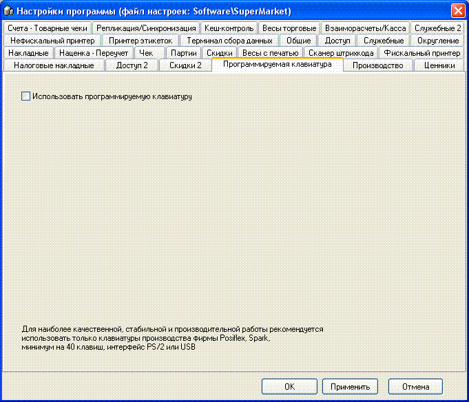
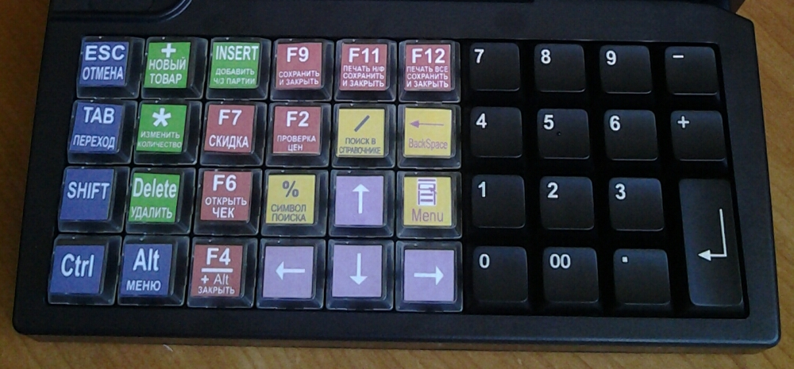

 Использовать программируемую клавиатуру - активация
возможности. Позволяет построить современное и удобное в работе место кассира
с фронтальной или боковой посадкой. Файлы настройки клавиатуры с расширением
*.tpl находятся в одном каталоге с ПО SuperMarket, программа для загрузки его
в клавиатуру - на диске с дистрибутивом ПО.
При активации опции, некоторые сочетания
горячих клавиш в Чеке могут изменится на более короткие. Ниже, на фото,
показана клавиатура с установленными цветными вкладышами для ПО
"SuperMarket". Файл с рисунком клавиш для печати таких вкладышей, находится на
диске с дистрибутивом ПО.

За более подробными тех.сведениями и
консультациями обращайтесь в Ваш сервисный центр.